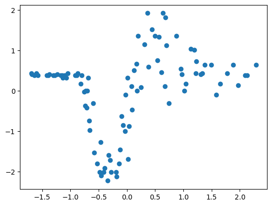

import os
os.environ["CUDA_VISIBLE_DEVICES"] = "3"
import numpy as np
import pandas as pd
import regdata as rd
import torch
import torch.nn as nn
import torch.nn.functional as F
import torch.distributions as dist
from tqdm import tqdm
import matplotlib.pyplot as plt
device = "cuda"
rd.set_backend("torch")Generate data
# x = torch.linspace(-1, 1, 100)
# y = (torch.sin(x * 2 * torch.pi) + torch.randn(x.size()) * 0.1).unsqueeze(1)
x, y, _ = rd.MotorcycleHelmet().get_data()
x = x.ravel().to(torch.float32)
idx = np.argsort(x)
x = x[idx]
y = y.to(torch.float32)
y = y[idx]
x = torch.vstack([torch.ones_like(x), x]).T
print(x.shape, y.shape)
x = x.to(device)
y = y.to(device)
print(x.dtype, y.dtype)
plt.scatter(x.cpu().numpy()[:, 1], y.cpu().numpy())torch.Size([94, 2]) torch.Size([94])
torch.float32 torch.float32
class MLP(nn.Module):
def __init__(self, in_dim, out_dim, neurons, transform=None):
super().__init__()
self.layers = nn.ModuleList()
self.transform = transform
if transform is None:
self.transform = lambda x: x
self.layers.append(nn.Linear(in_dim, neurons[0]))
else:
self.layers.append(nn.Linear(self.transform.n_grid + 1, neurons[0]))
for i in range(1, len(neurons)):
self.layers.append(nn.Linear(neurons[i - 1], neurons[i]))
self.layers.append(nn.Linear(neurons[-1], out_dim))
def forward(self, x):
x = self.transform(x)
# print(x.shape)
for layer in self.layers[:-1]:
x = F.gelu(layer(x))
return self.layers[-1](x)
class RBF(nn.Module):
def __init__(self, log_gauss_var, n_grid):
super().__init__()
self.log_gauss_var = nn.Parameter(torch.tensor(log_gauss_var))
self.n_grid = n_grid
self.grid = nn.Parameter(torch.linspace(-1, 1, n_grid))
self.register_buffer("bias", torch.zeros(1))
def forward(self, x):
self.dist = dist.Normal(self.grid, torch.exp(self.log_gauss_var))
features = torch.exp(self.dist.log_prob(x[:, 1:2]))
# print(features.shape)
features = torch.cat(
[
torch.ones_like(self.bias.repeat(features.shape[0])).reshape(-1, 1),
features,
],
dim=1,
)
return featuresRBF(0.0, 10).to(device)(x).shapetorch.Size([94, 11])# def transform_fn(x):
# all_x = []
# for i in range(2, 11):
# all_x.append(x[:, 1:2] ** i)
# return torch.hstack([x] + all_x)
def get_mn_sn(x, s0):
x = transform_fn(x)
sn_inv = (x.T @ x) / torch.exp(log_var_noise)
diag = sn_inv.diagonal()
diag += 1 / s0
sn = torch.inverse(sn_inv)
mn = sn @ ((x.T @ y) / torch.exp(log_var_noise))
return mn, sn
def neg_log_likelihood(x, y, m0, s0):
x = transform_fn(x)
cov = (x @ x.T) / s0
diag = cov.diagonal()
diag += torch.exp(log_var_noise)
return (
-dist.MultivariateNormal(m0.repeat(y.shape[0]), cov).log_prob(y.ravel()).sum()
)
def get_pred_post(sn, mn, x):
x = transform_fn(x)
pred_cov = x @ sn @ x.T
diag = pred_cov.diagonal()
diag += torch.exp(log_var_noise)
pred_mean = x @ mn
return pred_mean, pred_cov
def plot_preds_and_95(ax, x, pred_mean, pred_cov):
with torch.no_grad():
x = x[:, 1].cpu().numpy()
pred_mean = pred_mean.ravel().cpu().numpy()
pred_var = pred_cov.diagonal().cpu().numpy()
ax.plot(x, pred_mean, color="red", label="mean")
ax.fill_between(
x,
(pred_mean - 2 * np.sqrt(pred_var)),
(pred_mean + 2 * np.sqrt(pred_var)),
color="red",
alpha=0.2,
label="95% CI",
)
return axmlp = MLP(2, 1, [256, 256, 256]).to(device)
# mlp = RBF(0.1, 20).to(device)
transform_fn = mlp.forward
m0 = torch.zeros((1,)).to(device)
s0 = torch.tensor(1.0).to(device)
with torch.no_grad():
log_var_noise = nn.Parameter(torch.tensor(0.1)).to(device)
log_var_noise.requires_grad = True
m0.requires_grad = True
s0.requires_grad = Trueoptimizer = torch.optim.Adam([*list(mlp.parameters()), log_var_noise, m0, s0], lr=0.01)
losses = []
pbar = tqdm(range(500))
for i in pbar:
optimizer.zero_grad()
loss = neg_log_likelihood(x, y, m0, s0)
loss.backward()
optimizer.step()
losses.append(loss.item())
pbar.set_description(f"loss: {loss.item():.4f}")
plt.plot(losses)loss: 30.6285: 100%|██████████| 500/500 [00:02<00:00, 209.49it/s]mn, sn = get_mn_sn(x, s0)
pred_mean, pred_var = get_pred_post(sn, mn, x)
fig, ax = plt.subplots()
ax = plot_preds_and_95(ax, x, pred_mean, pred_var)
with torch.no_grad():
ax.scatter(x.cpu().numpy()[:, 1], y.cpu().numpy())
# ax.vlines(mlp.transform.grid.cpu().numpy(), -1, 1, color="black", alpha=0.2)
plt.show()torch.exp(log_var_noise), s0, m0(tensor(0.1191, device='cuda:0', grad_fn=<ExpBackward0>),
tensor(1.3897, device='cuda:0', requires_grad=True),
tensor([-0.0693], device='cuda:0', requires_grad=True))Add Gaussian transform
mlp = MLP(2, 1, [256, 256, 256], transform=RBF(0.1, 10)).to(device)
# mlp = RBF(0.1, 20).to(device)
transform_fn = mlp.forward
m0 = torch.zeros((1,)).to(device)
s0 = torch.tensor(1.0).to(device)
with torch.no_grad():
log_var_noise = nn.Parameter(torch.tensor(0.1)).to(device)
log_var_noise.requires_grad = True
m0.requires_grad = False
s0.requires_grad = Trueoptimizer = torch.optim.Adam([*list(mlp.parameters()), log_var_noise, m0, s0], lr=0.01)
losses = []
pbar = tqdm(range(500))
for i in pbar:
optimizer.zero_grad()
loss = neg_log_likelihood(x, y, m0, s0)
loss.backward()
optimizer.step()
losses.append(loss.item())
pbar.set_description(f"loss: {loss.item():.4f}")
plt.plot(losses)loss: -29.9227: 100%|██████████| 500/500 [00:03<00:00, 156.90it/s]mn, sn = get_mn_sn(x, s0)
pred_mean, pred_var = get_pred_post(sn, mn, x)
fig, ax = plt.subplots()
ax = plot_preds_and_95(ax, x, pred_mean, pred_var)
with torch.no_grad():
ax.scatter(x.cpu().numpy()[:, 1], y.cpu().numpy())
ax.vlines(mlp.transform.grid.cpu().numpy(), -1, 1, color="black", alpha=0.2)
plt.show()Just Gaussian basis
# mlp = MLP(2, 1, [32, 32, 32], transform=RBF(0.1, 10)).to(device)
mlp = RBF(1.0, 5).to(device)
transform_fn = mlp.forward
m0 = torch.zeros((1,)).to(device)
s0 = torch.tensor(1.0).to(device)
with torch.no_grad():
log_var_noise = nn.Parameter(torch.tensor(0.1)).to(device)
log_var_noise.requires_grad = True
m0.requires_grad = False
s0.requires_grad = Trueoptimizer = torch.optim.Adam([*list(mlp.parameters()), log_var_noise, m0, s0], lr=0.001)
losses = []
pbar = tqdm(range(500))
for i in pbar:
optimizer.zero_grad()
loss = neg_log_likelihood(x, y, m0, s0)
loss.backward()
optimizer.step()
losses.append(loss.item())
pbar.set_description(f"loss: {loss.item():.4f}")
plt.plot(losses)loss: 207.0843: 100%|██████████| 500/500 [00:02<00:00, 195.61it/s]mn, sn = get_mn_sn(x, s0)
pred_mean, pred_var = get_pred_post(sn, mn, x)
fig, ax = plt.subplots()
ax = plot_preds_and_95(ax, x, pred_mean, pred_var)
with torch.no_grad():
ax.scatter(x.cpu().numpy()[:, 1], y.cpu().numpy())
ax.vlines(mlp.grid.cpu().numpy(), -1, 1, color="black", alpha=0.2)
plt.show()Appendix
from sklearn.preprocessing import StandardScaler, MinMaxScaler
from sklearn.model_selection import train_test_split
from sklearn.metrics import mean_squared_errordata = pd.read_csv("~/datasets/uci/bike/hour.csv", header=None).iloc[:, 1:]
data.shape(17379, 18)X = data.iloc[:, :-1].values
y = data.iloc[:, -1].values
X_train, X_test, y_train, y_test = train_test_split(X, y, test_size=0.4, random_state=0)
X_train.shape, X_test.shape, y_train.shape, y_test.shape
x_scaler = MinMaxScaler()
y_scaler = StandardScaler()
X_train = x_scaler.fit_transform(X_train)
y_train = y_scaler.fit_transform(y_train.reshape(-1, 1))
X_test = x_scaler.transform(X_test)
y_test = y_scaler.transform(y_test.reshape(-1, 1))
X_train.shape, X_test.shape, y_train.shape, y_test.shape((10427, 17), (6952, 17), (10427, 1), (6952, 1))[X_train, X_test, y_train, y_test] = map(
lambda x: torch.tensor(x, dtype=torch.float32).to(device),
[X_train, X_test, y_train, y_test],
)mlp = MLP(17, 1, [10, 10]).to(device)
optimizer = torch.optim.Adam(mlp.parameters(), lr=0.01)
losses = []
pbar = tqdm(range(500))
for i in pbar:
optimizer.zero_grad()
loss = F.mse_loss(mlp(X_train), y_train)
loss.backward()
optimizer.step()
losses.append(loss.item())
pbar.set_description(f"loss: {loss.item():.4f}")
plt.plot(losses)loss: 0.0040: 100%|██████████| 500/500 [00:01<00:00, 482.25it/s]with torch.no_grad():
y_pred = mlp(X_test).cpu().numpy()
if isinstance(y_test, torch.Tensor):
y_test = y_test.cpu().numpy()
print(y_pred.shape, y_test.shape)
print("RMSE", mean_squared_error(y_test, y_pred, squared=False))(6952, 1) (6952, 1)
RMSE 0.08354535